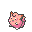
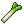
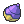

Geschenke & Tausch
Alle Pokémon, die du geschenkt bekommst, kaufen kannst oder im Spiel ertauschst – mit dem, was du dafür tun musst.
Starter
| Pokémon | Ort | Level | So bekommst du es |
|---|---|---|---|
| Alabastia | Lv. 5 | Zu Beginn des Spiels im Labor von Professor Eich: eines von drei. Es schillert genau dann, wenn es in der Vorschau des Pokéballs geschillert hat. | |
| Neuborkia | Lv. 5 | Im Labor von Professor Lind, nachdem du ihm den GS-Ball von Professor Eich gebracht hast: eines von drei. | |
| Wurzelheim | Lv. 5 | Im Labor von Professor Birk: eines von drei. Erst nach dem Hoenn-Titel und wenn du alle Pokémon des Hoenn-Pokédex gefangen hast (Pokédex vervollständigen). |
Geschenke in Kanto
| Pokémon | Ort | Level | So bekommst du es |
|---|---|---|---|
| Route 4 | Lv. 10 | Der Verkäufer im Pokémon-Center verkauft es dir für 500 ₽. | |
| Prismania City | Lv. 25 | Der Pokéball im Dachzimmer des Wohnhauses. | |
| Saffronia City | Lv. 35 | Besiege den Meister des Kampf-Dojos und nimm dir die beiden Pokébälle: Du bekommst beide. | |
| Silph Co. | Lv. 35 | Sprich mit dem Angestellten im 7. Stock der Silph Co. |
Geschenke in Johto
| Pokémon | Ort | Level | So bekommst du es |
|---|---|---|---|
| Viola City | Ei | Der Assistent von Professor Lind wartet im Pokémon-Center, nachdem dich der Professor in Viola City angerufen hat. Danach bekommst du von ihm noch: Kleiner EP-Teiler. | |
| Ei | Route 34 | Ei | Das Seltsame Ei aus der Pension auf Route 34: eines von elf Baby-Pokémon, je nach deiner Antwort. Alles dazu steht unter Zucht. |
| Route 35 | Lv. 20 | Der Wächter im Durchgang zwischen Dukatia City und Route 35 vertraut es dir mit einem Brief an: Spitzname Kenya, Original-Trainer Rudy, trägt Retrobrief. | |
| Dukatia City | Lv. 20 | Sprich mit Bill in seinem Haus und sag Ja. Original-Trainer ist Bill. | |
| Anemonia City | Lv. 25 | Der Angler im Pokémon-Center gibt es dir, wenn kein Pokémon in deinem Team Surfer einsetzen kann. | |
| Anemonia City | Lv. 20 | Ein Mann in Anemonia City vertraut es dir an: Spitzname Shuckie, Original-Trainer Kirk, trägt Beerensaft. | |
| Kesselberg | Lv. 25 | Besiege Leif im Kesselberg (Untergeschoss). | |
| Drachenhöhle | Lv. 15 | Der Älteste im Schrein der Drachenhöhle gibt es dir nach seiner Prüfung. Beantwortest du alle Fragen ohne Fehler, ist es schillernd und hat das Wesen Hart. |
Geschenke in Hoenn
| Pokémon | Ort | Level | So bekommst du es |
|---|---|---|---|
| Route 119 | Lv. 25 | Besiege Kordula im Wetterinstitut. Danach schenkt dir ein Forscher im Obergeschoss das Pokémon; es trägt Zauberwasser. | |
| Bad Lavastadt | Ei | Die alte Frau bei den heißen Quellen gibt dir das Ei. | |
| Moosbach City | Lv. 5 | Der Pokéball in Troys Haus. Er liegt dort, sobald du Champ von Hoenn bist. |
Preise der Spielhallen
Diese Pokémon bekommst du gegen Münzen. Du kannst sie beliebig oft holen.
| Pokémon | Ort | Level | Preis |
|---|---|---|---|
| Prismania City | Lv. 25 | 180 Münzen | |
 Piepi | Prismania City | Lv. 25 | 500 Münzen |
| Prismania City | Lv. 25 | 1.500 Münzen | |
| Prismania City | Lv. 25 | 1.800 Münzen | |
| Prismania City | Lv. 25 | 2.000 Münzen | |
| Prismania City | Lv. 25 | 2.800 Münzen | |
| Prismania City | Lv. 25 | 5.500 Münzen | |
| Prismania City | Lv. 25 | 9.999 Münzen | |
| Dukatia City | Lv. 15 | 120 Münzen | |
| Piepi | Dukatia City | Lv. 15 | 500 Münzen |
| Dukatia City | Lv. 15 | 2.800 Münzen | |
| Dukatia City | Lv. 15 | 5.500 Münzen | |
| Dukatia City | Lv. 15 | 6.500 Münzen |
Tausch im Spiel
Jeder Tausch geht nur einmal. Das Pokémon, das du bekommst, hat das Level des Pokémon, das du abgibst.
Kanto
| Du gibst | Du bekommst | Ort | Spitzname / Original-Trainer | Trägt |
|---|---|---|---|---|
| Azuria City | Schmusi / Dante | |||
| Zinnoberinsel | Europe / Gustav | — | ||
| Zinnoberinsel | Leckibal / Franz | — | ||
| Zinnoberinsel | Spajettie / Norma | |||
| Route 11 | Ridonino / Thomas | — | ||
| Route 18 | Mark / Helmuth | — | ||
| Route 2 | Mimose / Richard | — | ||
| Untergrundpfad | Niedoman / Waltraud | |||
| Orania City | Polente / Elisa |  Lauchstange |
Johto
| Du gibst | Du bekommst | Ort | Spitzname / Original-Trainer | Trägt |
|---|---|---|---|---|
| Ebenholz City | Mimose / Richard | — | ||
| Dukatia City | Herakles / Chester | |||
| ein beliebiges Pokémon | Oliviana City Jasmin in ihrer Arena, nachdem du sie besiegt hast – spätestens nach dem Johto-Titel bietet sie den Tausch an. | Beißer / Jasmin | ||
| Oliviana City | Kugo / Tim | |||
| Viola City | Aaron / Tobi |
Hoenn
| Du gibst | Du bekommst | Ort | Spitzname / Original-Trainer | Trägt |
|---|---|---|---|---|
| Baumhausen City | Pluspo / Rüdiger | |||
| Floßbrunn | Seepom / Torsten | |||
| Metarost City | Murzello / Fabian |  Maronbeere | ||
| Kampfzone Die Kampfzone erreichst du mit dem Schiff, sobald du Champ von Hoenn bist. | Miezmiez / Tabitha |